A DevClub é a escola que faz essa transformação desde 2009:
aula 100% prática, projeto real no portfólio e tutoria humana ao vivo,
do primeiro Hello World à primeira vaga.
Você aprende dentro das ferramentas que o mercado usa.
Editor, terminal e navegador — o ambiente completo de um dev de verdade, com
desafios guiados e feedback do tutor em cada commit.
aluno@devclub
1 2 3 4 5 6 7 8 9
https://meu-projeto.devclub.app
meu primeiro projetoPortfólio da Marinacontratar →
● tutor onlinefeedback em até 12h úteis
// e a plataforma onde tudo isso acontece
app.devclub.dev/meus-cursos
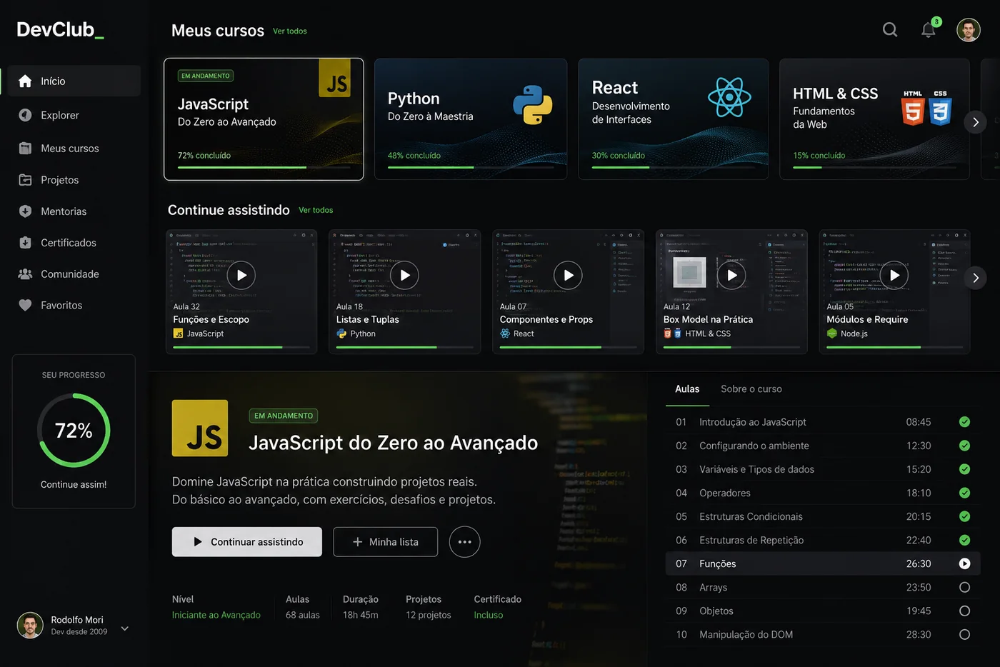
Suas aulas e trilhas
Continue de onde parou, acompanhe o progresso de cada formação e veja o que vem depois.
app.devclub.dev/comunidade
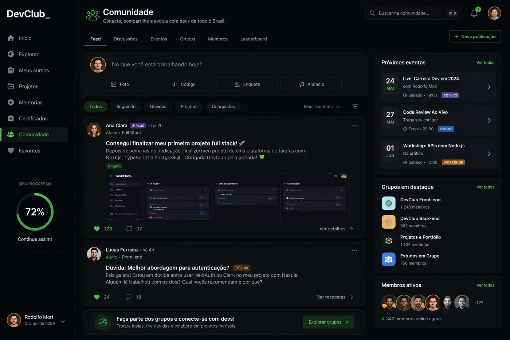
A comunidade viva
Projetos, dúvidas e eventos ao vivo — com gente de verdade respondendo do outro lado.
// projeto conceitual — telas ilustrativas
mentorias.live
Gente de verdade, ao vivo, do seu lado.
Mentorias semanais em grupo, revisão de código na tela e simulação de entrevista —
você nunca estuda sozinho.
Sala de Mentoria — revisão de código ao vivo
👥 4 participantes ativos · toda terça, 20h
Felipe Prado · apresentando
"Compartilha a tela e roda o teste de novo — agora repara no
console."
Ana Paula Juliana Reis Diego Tavares
chamada encerrada
Você saiu da mentoria
A sala continua rolando toda terça, às 20h.
{ }Revisão de código ao vivo
Seu PR aberto na tela, com o tutor apontando o que melhorar.
?!Plantão de dúvidas
Travou? Chama no chat e destrava no mesmo dia.
>_Simulação de entrevista
Mock interview com quem já contratou muito dev.
historia.md
De 2009 até aqui: uma história de sala em sala.
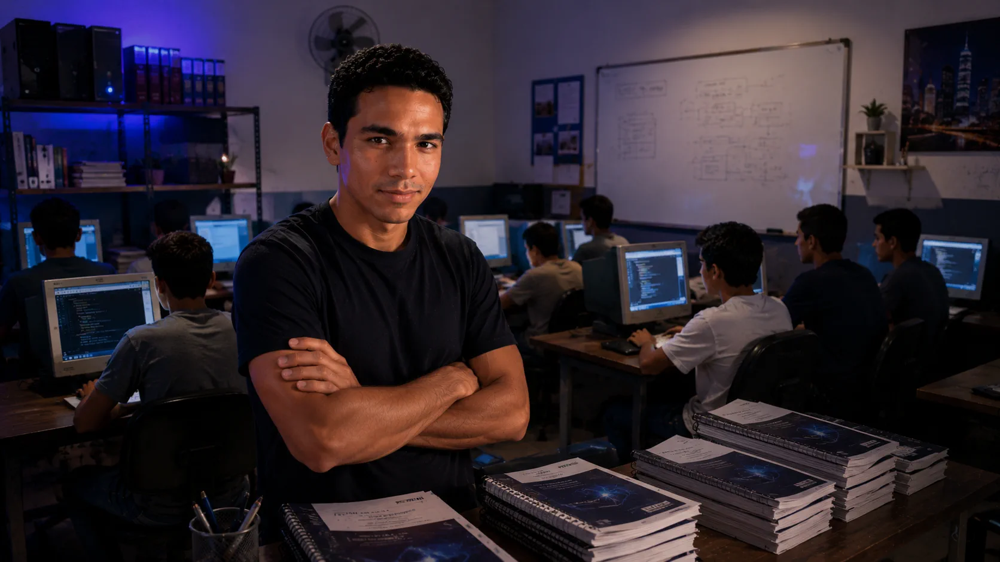
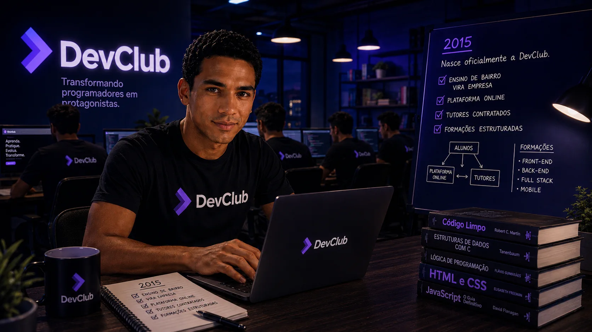
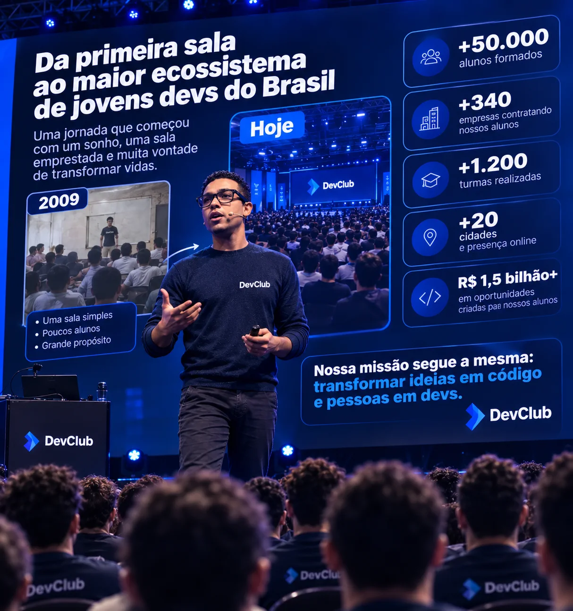
2009
2009 · o começo
Uma sala, alguns computadores e uma ideia fixa.
Rodolfo Mori junta o que ganhou dando aulas informais e monta a própria estrutura: computadores,
apostilas e uma sala pra chamar de sua. Nascem as primeiras turmas — e a regra que nunca mudou: não
pedimos diploma, pedimos vontade de aprender.
2015 · vira empresa
O projeto de bairro vira a DevClub.
Plataforma online, tutores contratados e formações estruturadas. O método continua o mesmo da sala de
aula: prática desde o dia um, projeto real e alguém do lado pra responder dúvida.
2020 · escala
O mundo fica remoto — e a DevClub acelera.
Como já operava online, a escola vira referência nacional da noite pro dia. Milhares de pessoas em
transição de carreira encontram aqui o caminho pra primeira vaga em tech.
2026 · hoje
+42 mil devs formados. E contando.
17 anos depois da primeira sala, são mais de 340 empresas contratando nossos alunos. A missão segue
idêntica: transformar ideias em código e pessoas em devs.
formacoes.json
Escolha por onde sua mente vai crescer.
Cada formação, do briefing ao ambiente rodando. A de Cibersegurança é
interativa de verdade — teste você mesmo.
Full Stack
Full Stack · briefing
você
Quero mudar de carreira. Consigo fazer um sistema inteiro sozinho?
tutor
Consegue. Você monta a interface em React, a API em Node, o banco em SQL e sobe tudo em produção —
com um projeto real no portfólio ao final.
HTML · CSS · JavaScript
React · Node · SQL
Git · deploy · testes
320h + projeto final
workspaceshelleditordeploy
$ npm run deploy
» build de produção…
✓ 12 testes passando
✓ bundle 84kb (gzip)
✓ deploy: meu-sistema.devclub.app» tutor notificado para review
Front-end · briefing
você
Nunca desenhei nada. Consigo fazer interface bonita?
tutora
A gente ensina o olho junto com o código: layout, tipografia, animação e responsividade. Você sai
fazendo interface que o mercado disputa.
Segurança não é coisa de filme? O que um site consegue saber de mim?
tutor
Mais do que você imagina — e sem pedir permissão nenhuma. Roda o teste no painel ao lado: tudo que
aparecer ali, qualquer site que você visita também vê.
fundamentos de redes · OWASP
pentest · análise de vulnerabilidade
hardening · resposta a incidente
200h + laboratório real
scanner.shterminal
$ ./devclub-scan --alvo=voce
» este terminal é real e roda no seu navegadorvocê está seguro?clique abaixo para descobrir o que este site
já consegue ver sobre você — sem pedir permissão.
// nada é salvo nem enviado a lugar nenhum — tudo roda e morre no seu
navegador
Back-end · briefing
você
Quero fazer a parte que ninguém vê — a que aguenta tráfego.
tutora
Então é aqui. APIs em Node, modelagem de banco, autenticação, cache e deploy em nuvem. Você aprende
a pensar em arquitetura, não só em rota.
IA vai roubar minha vaga ou virar minha ferramenta?
tutora
Ferramenta — se você souber usar. Aqui você automatiza tarefa chata, analisa dado de verdade e
coloca IA dentro dos seus projetos.
Python · pandas
IA aplicada · APIs de LLM
automações do dia a dia
120h + projeto com dados reais
notebookpythonsaída
import pandas as pd
vagas = pd.read_csv("vagas.csv")
top = vagas.groupby("stack").size()
# saída ▸> react 1284> node 977> python 841
// o catálogo completo — 15 formações e trilhas
</>Front EndformaçãoapiBack EndformaçãoallFull StackformaçãoappMobileformaçãoReactbiblioteca UINoderuntime JSJavaScriptdo zero ao avançadoHTML5estruturaCSS3estiloia:Gestor de IAtrilhabotIA e AutomaçõestrilhaClaude & Claude Codedev com IATrilha N8NautomaçãosqlAnálise de DadostrilhabiPower BIdashboards</>Front EndformaçãoapiBack EndformaçãoallFull StackformaçãoappMobileformaçãoReactbiblioteca UINoderuntime JSJavaScriptdo zero ao avançadoHTML5estruturaCSS3estiloia:Gestor de IAtrilhabotIA e AutomaçõestrilhaClaude & Claude Codedev com IATrilha N8NautomaçãosqlAnálise de DadostrilhabiPower BIdashboards
jornada.sh
Do zero à vaga, em 4 sinapses.
01
instalar( )
Semana 1 você já escreve código. Lógica, HTML, CSS e JavaScript com exercícios curtos e feedback do
tutor.
02
construir( )
A cada módulo, um projeto real: landing, dashboard, API completa. Tudo commitado no seu GitHub.
03
revisar( )
Tutor humano revisa seu código, aponta melhorias e responde dúvidas em até 12h úteis.
04
contratar( )
CV técnico, mock interview e a rede de +340 empresas parceiras. Pull request aprovado: bem-vindo ao
mercado.
alem_do_codigo.json
Tudo que você precisa além do código.
Carreira não é só sintaxe — role e veja o resto do caminho vir junto.
cvRecrutadora no seu canto
Encontro semanal com a recrutadora da casa: currículo, LinkedIn e portfólio afiados pra vaga certa.
zenTerapeuta de alta performance
Cabeça em ordem pra maratona: sessões em grupo sobre foco, ansiedade e constância nos estudos.
ai*Agentes de IA 24h
Tutor humano dorme; os agentes não. Tira-dúvidas treinado no conteúdo, a qualquer hora do dia.
sosSuporte humano 7 dias
Gente de verdade respondendo todos os dias — inclusive no domingo de véspera de entrega.
jobVagas exclusivas
Mural com vagas que as empresas parceiras abrem só pra alunos DevClub, antes do LinkedIn.
++Comunidade viva
Milhares de devs na mesma jornada: networking, duplas de estudo e code review entre alunos.
alunos.log
Mentes que já fizeram a troca de carreira.
Dez histórias de quem começou do zero — passe o mouse, arraste as setas e leia.
caixa de supermercado → back-end
“Eu achava que programar era coisa de gênio. A DevClub me mostrou que era só prática — e
constância.”
analista de RH → front-end
“Estudei à noite, depois do expediente. Seis meses depois pedi demissão pro emprego novo.”
recepcionista → dev júnior
“Ninguém perguntou meu diploma na entrevista. Perguntaram meu GitHub — e ele estava cheio.”
motorista de app → full stack
“Comecei achando que era tarde demais. Hoje sou eu quem aprova o PR da galera nova.”
professora de inglês → front-end
“Troquei a sala de aula pelo VS Code sem perder o que eu amava: explicar as coisas direito.”
militar → cibersegurança
“Passei a vida protegendo perímetro físico. Agora protejo sistema — e o salário triplicou.”
enfermeira → dados & IA
“Plantão me ensinou a lidar com pressão. Aqui virou análise de dados que salva operação.”
entregador → dev mobile
“Estudava no celular entre uma entrega e outra. O tutor respondia às 23h — e eu não parava.”
dona de casa → QA
“Fiquei 6 anos fora do mercado. Voltei direto pra tecnologia, com carteira assinada.”
garçom → dev front-end
“Meu portfólio saiu dos projetos da formação. Foi ele que abriu a porta da primeira vaga.”
projetos.deploy
O que sai da mente dos nossos alunos.
Projetos reais construídos durante as formações — do primeiro deploy ao site que
abriu a vaga. Arraste pra navegar.
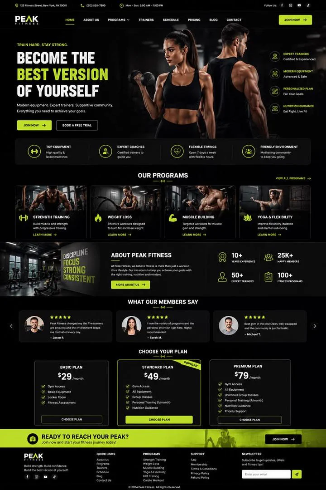
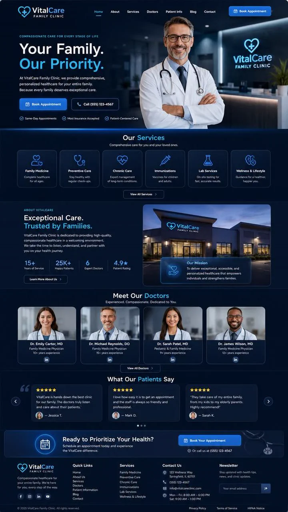
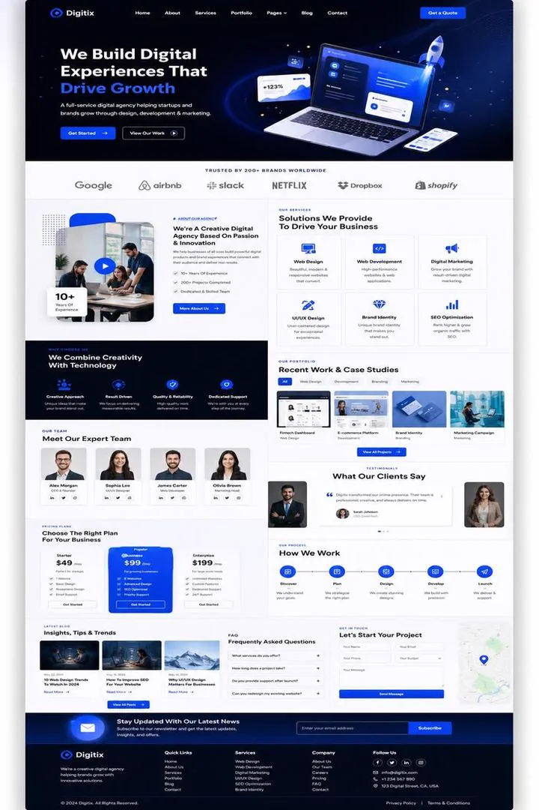
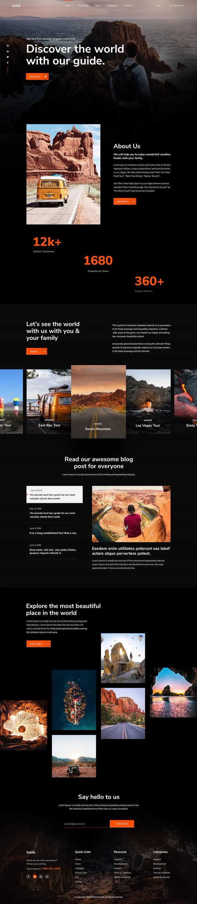
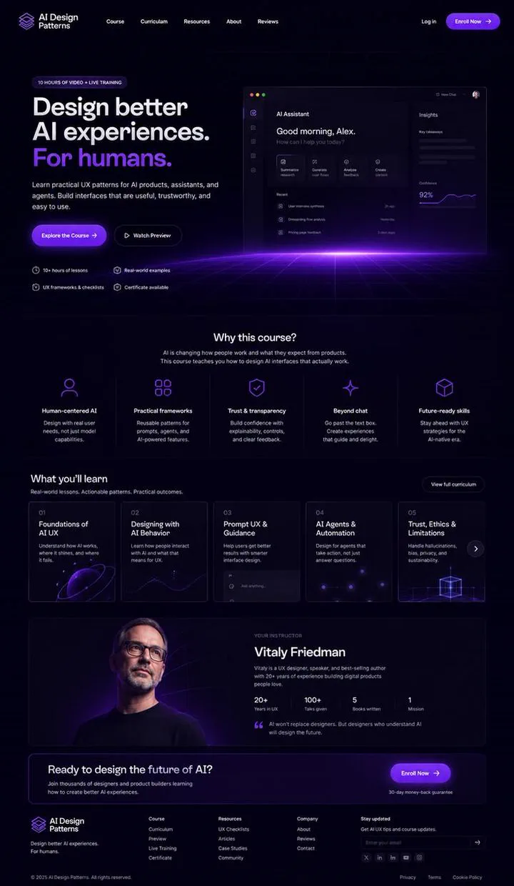
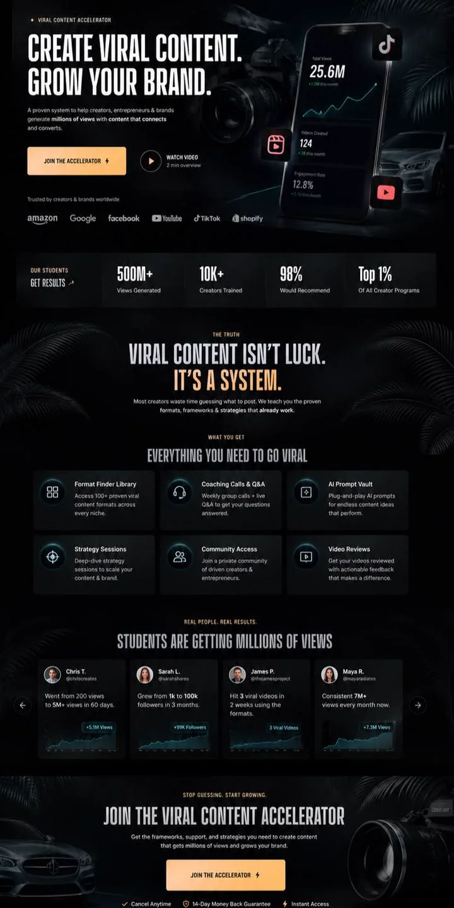
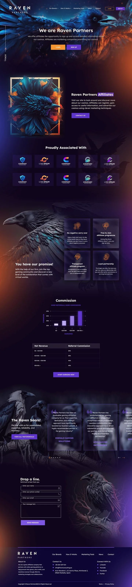
← arraste →
// projeto conceitual — telas usadas apenas como referência visual
TotvssoftwareGitHubdev toolsGitLabDevOpsMongoDBbanco de dadosDatadogobservabilidadeDockerinfraestruturaFigmadesignSlackcolaboraçãoNotionprodutividadeVercelcloudSupabasebackendCloudflareinfraestruturaTotvssoftwareGitHubdev toolsGitLabDevOpsMongoDBbanco de dadosDatadogobservabilidadeDockerinfraestruturaFigmadesignSlackcolaboraçãoNotionprodutividadeVercelcloudSupabasebackendCloudflareinfraestrutura
// projeto conceitual — marcas citadas apenas de forma ilustrativa
tutores.team
Quem responde suas dúvidas às 23h de uma terça.
Arraste para o lado e clique num rosto para conhecer quem vai te acompanhar.
Felipe Prado
Conduz as mentorias ao vivo e revisa código de aluno todo dia. Foi de suporte técnico a tech lead em 4
anos.
full stackver perfil
Felipe Prado mentor-chefe
Ana Paula
Ensina o olho junto com o código: layout, tipografia e animação. Já entregou interface pra banco e
e-commerce.
front-endver perfil
Ana Paula front-end · UI
Juliana Reis
Node, banco de dados e arquitetura que aguenta tráfego. Responde dúvida de API às 23h sem reclamar.
back-endver perfil
Juliana Reis back-end · cloud
Diego Tavares
Prepara currículo, LinkedIn e simulação de entrevista. Já esteve do outro lado da mesa contratando
devs.
carreiraver perfil
Diego Tavares carreira
Renata Lima
Veio de big tech pra ensinar dados e IA aplicada. Mostra como automatizar o que ninguém quer fazer à
mão.
dados & IAver perfil
Renata Lima dados & IA
diploma.pdf
Termina com diploma de verdade.
Escola reconhecida pelo MEC: além do portfólio no GitHub, você sai com certificado
oficial de conclusão.
>_DEVCLUB 2009
PARA quem chega até o fim da formação
DE DevClub · Instituto de Tecnologia
REG DVC-2026-8F3A
clique no lacre para abrir o diploma
MODELOFICTÍCIO</>
CÓDIGO DE REGISTRO DVC 2026 / 000123
DevClub — Instituto de Tecnologia
ENSINO PRÁTICO DE EXCELÊNCIA · DESDE 2009
A DIREÇÃO DO DEVCLUB — INSTITUTO DE TECNOLOGIA, NO USO DE SUAS ATRIBUIÇÕES E TENDO EM VISTA A CONCLUSÃO DA FORMAÇÃO, CONFERE O TÍTULO DE
DESENVOLVEDOR FULL STACK
A
Seu Nome Aqui
NACIONALIDADE BRASILEIRA, NATURAL DE SÃO PAULO – SP, NASCIDO EM 01 DE JANEIRO DE 1998, RG 12.345.678-9 SSP/SP, CPF 123.456.789-00, POR HAVER CONCLUÍDO EM 12 DE DEZEMBRO DE 2026, COM 480 HORAS, A FORMAÇÃO DE
Tecnologia em Desenvolvimento de Software
E POR TER INTEGRALIZADO TODOS OS PROJETOS E MENTORIAS PREVISTOS NA TRILHA, DE ACORDO COM AS DISPOSIÇÕES DO PROGRAMA, OUTORGA-LHE O PRESENTE DIPLOMA, A FIM DE QUE POSSA GOZAR DE TODOS OS DIREITOS E PRERROGATIVAS LEGAIS.